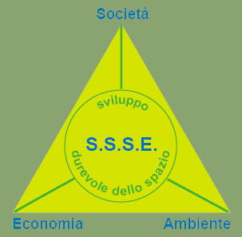

| In linea con lo Schema di Sviluppo dello Spazio Europeo | |
|  I tre ambiti di intervento dello Schema di Sviluppo dello Spazio Europeo (società, economia, ambiente) e gli obiettivi che persegue |
Promuovendo
l’idea di uno sviluppo territoriale più "equilibrato" in assenza di un
polo dominante, il policentrismo è diventato un
concetto cardine anche nelle politiche adottate dalla Commissione
Europea che,
all’interno dello Schema di Sviluppo
dello Spazio Europeo, auspica sia "lo sviluppo di un sistema di città
policentrico e più equilibrato che il superamento del dualismo città-campagna
che oggigiorno non ha più ragione di esistere" (CE, 1999). L’obiettivo è di promuovere uno sviluppo
territoriale armonioso e innescare processi in grado di contrastare la grande
concentrazione di abitanti nelle metropoli attivando azioni che prevedano che
le città medio piccole si dotino degli stessi servizi delle grandi città e
distribuiscano le funzioni in più punti del proprio territorio connessi grazie
alla dotazione di infrastrutture di accessibilità. Queste ultime, tuttavia,
dovrebbero derivare dallo studio delle potenzialità esistenti, piuttosto che ipotizzare
nuove opere molto onerose, con tempi di realizzazione di solito lunghi e poco
compatibili con i valori ambientali. La nuova prospettiva porta, secondo Choay (1994), alla “fine del modello cittadino” ancorato a una "città" – intesa come entità spaziale discreta caratterizzata da modalità particolari di vita comune, da una specifica ideologia territoriale fortemente legata ai modelli architettonici del modernismo, e in forte opposizione con la campagna – per lasciare spazio all’"urbano" come nuovo concetto che mette al centro l’interazione territoriale e la mobilità dell’abitare. Insomma, come precisa Soja qualche anno dopo, bisogna abbandonare la visione di una città singolare, insostituibile, estesa su un territorio continuo, per promuovere piuttosto un approccio all’urbano "policentrico, discontinuo, frammentato e caleidoscopico" (Soja, 2000). Va da sé che in questo nuovo quadro i trasporti pubblici, così come le diverse modalità di mobilità, assumono una rilevanza cruciale. L’insieme di tali reti di mobilità producono una nuova reticolarità e connettività e modificano il sistema di prossimità: l’urbano assiste così a un’evoluzione delle sue centralità, dei suoi assi, dei suoi pieni e dei suoi vuoti (Lévy, Lussault, 2003). Dal punto di vista degli individui, non è tanto la distanza da coprire o la velocità pura dello spostamento a rivestire importanza, quanto piuttosto la capacità di gestire le diverse metriche della mobilità. Tale capacità, esprimibile in termini di tempo, denaro e mezzo a disposizione, rappresenta un fattore discriminante all’interno dei gruppi sociali e dunque diventa un fattore di competitività anche tra i territori. Per tale motivo, l’analisi dell’urbano non può prescindere dallo studio dei processi cruciali dell’urbanizzazione, delle infrastrutture e dei trasporti adottando una prospettiva policentrica, reticolare e multiscalare che tenga conto delle nuove spazialità della società contemporanea. |